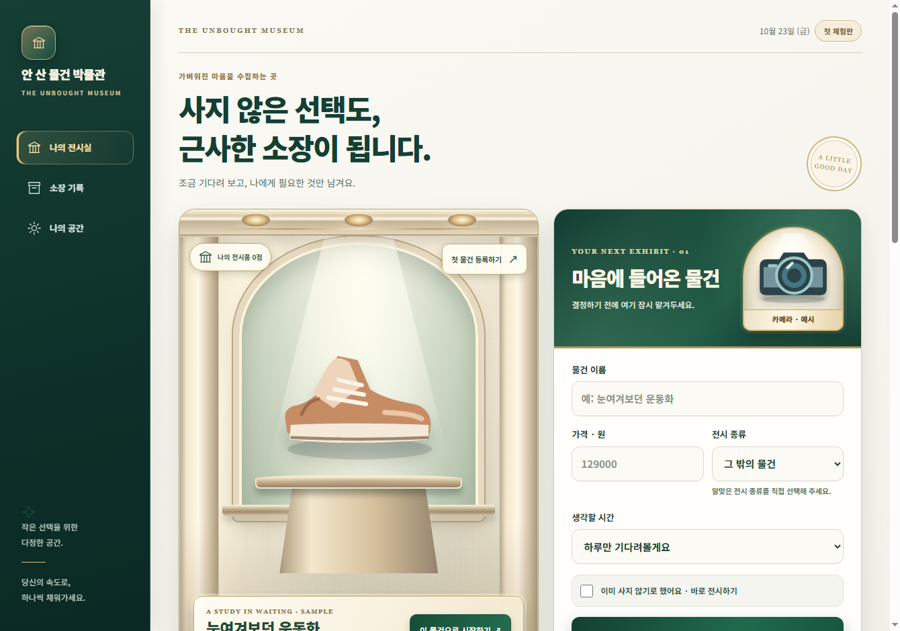
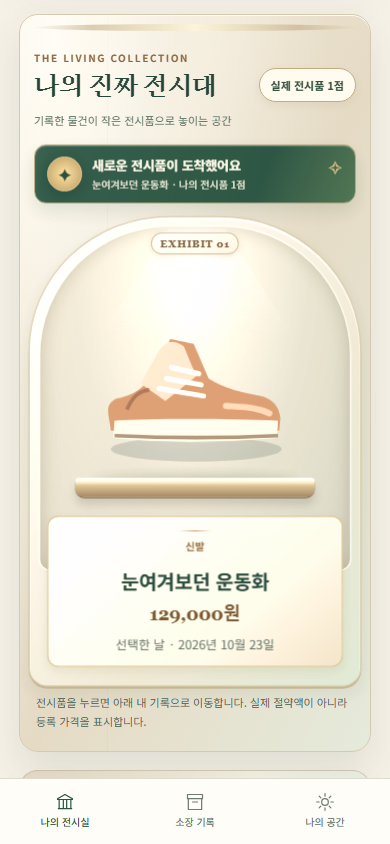
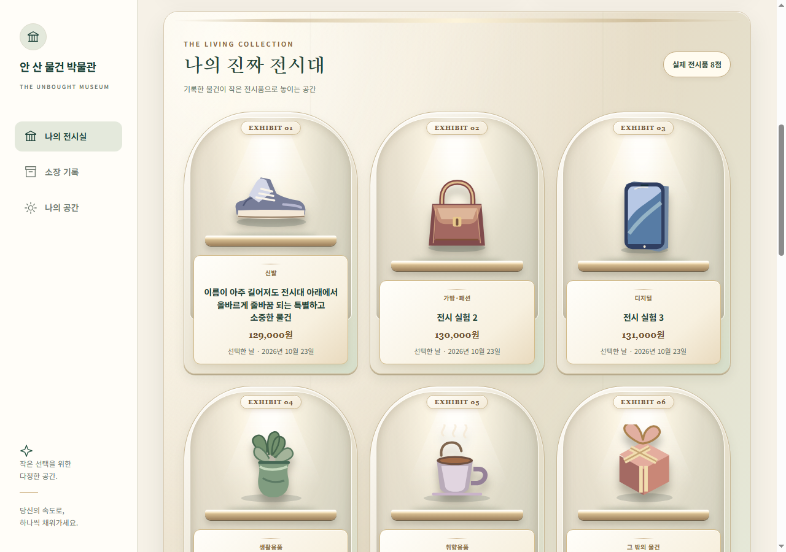
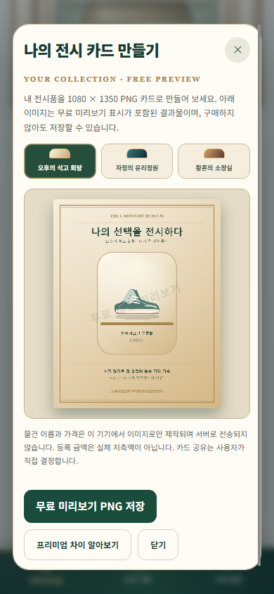
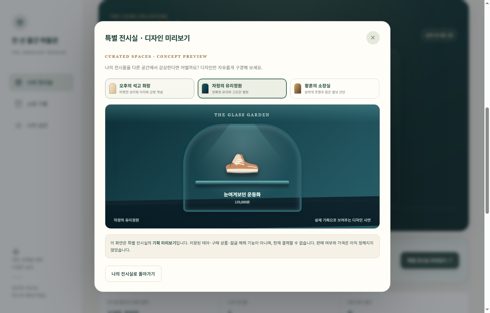

물건을 기록해요
물건 이름과 등록 가격을 남깁니다. 오늘 결정하지 않아도 괜찮습니다.
THE UNBOUGHT MUSEUM · FIRST EXPERIENCE
눈여겨보던 물건을 잠시 맡겨 두고, 시간을 보낸 뒤 정말 필요한지 결정하세요. 사지 않기로 한 선택은 하나의 전시품이 됩니다.
회원가입·결제 없이 브라우저에서 시작할 수 있습니다. 현재는 무료 시제품입니다.

작은 선택을 위한 전시실물건 이름과 등록 가격을 남깁니다. 오늘 결정하지 않아도 괜찮습니다.
나에게 필요한 물건인지 천천히 생각할 시간을 직접 선택합니다.
다시 고민하거나 구매해도 괜찮습니다. 전시된 물건만 전시 금액에 포함됩니다.
실제 실행 화면을 사용한 예시입니다. 아래 물건과 금액은 시연용 기록입니다.


실제 기록을 이용해 1080×1350 PNG 전시 카드를 무료로 제작해 보세요. 카드에는 무료 미리보기 표시가 포함되며, 제작되는 이미지는 이 기기에만 저장됩니다. 아래 화면의 물건은 시연용 기록입니다.
무료 전시 카드 체험하기 ↗
석고 회랑, 유리정원, 황혼 소장실. 특별 전시실 3종은 디자인 미리보기로만 제공됩니다. 실제 판매나 결제는 아직 시작하지 않았습니다.
앱에서 디자인 둘러보기 ↗
아닙니다. 전시 금액은 ‘사지 않은 물건의 등록 가격 합계’입니다. 실제 통장 잔액이나 저축·투자 수익을 의미하지 않습니다.
현재 기기의 브라우저 저장 공간에 보관됩니다. 다른 기기와 자동 동기화되지 않습니다. 브라우저 데이터를 삭제하면 사라질 수 있으므로 앱의 JSON 백업 기능을 이용하세요.
지원되는 브라우저에서는 웹앱 설치와 오프라인 사용을 준비했습니다. 최초 접속 시 정적 파일이 캐시되어야 하며, 실제 휴대전화 설치는 외부 HTTPS 체험 경로가 확보된 뒤 검증할 예정입니다.
현재는 시연용 미리보기입니다. 프리미엄 박물관 영구 이용권 4,900원은 검증용 가격 가안이며, 실제 상품 등록·결제·복원·환불은 아직 제공하지 않습니다. 기본 기록과 전시는 무료입니다.
선택을 조금 늦추는 시간부터 시작해 보세요.
무료로 박물관 열기 ↗